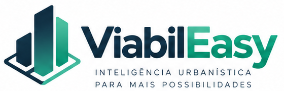

Terreno e recuos
Informe as medidas e organize as referências urbanísticas do seu terreno.

Antes da primeira obra, um novo olhar. Descubra o que o seu terreno pode se tornar.
Descubra o que o seu terreno pode se tornar.
DA LOCALIZAÇÃO À POSSIBILIDADE.
Explore livremente. Entre para analisar e salvar seus terrenos.
Selecione os cenários abaixo e compare suas estimativas.
Deslize para explorar as cinco alternativas.
Uma residência contemporânea, com espaços generosos e jardim no mesmo lote.
2 pavimentosCotas ilustrativas do limite do lote até o envelope de 27 m. A edificação pode ficar mais afastada. Parâmetros, usos e viabilidade dependem da análise específica do terreno.
Compare as possibilidades com premissas transparentes.
Compare as alternativas com as mesmas premissas de terreno e margem. Todos os valores abaixo são fictícios.
| Alternativa | Potencial construtivo | Unidades | VGV | Custo total | Residual do terreno | Retorno sobre custo | Resultado no exemplo |
|---|---|---|---|---|---|---|---|
| 576 m²2 pav. · CA 0,5× | 1 | R$ 4,21 mi | R$ 4,91 mi | R$ 338.204 | -14,3% | Saldo negativo | |
| 3.168 m²8 pav. · CA 2,6× | 32 | R$ 22,63 mi | R$ 16,62 mi | R$ 3,74 mi | 36,2% | Atinge a margem alvo | |
| 2.640 m²5 pav. · CA 2,2× | 30 | R$ 16,9 mi | R$ 15 mi | R$ 654.720 | 12,6% | Abaixo da margem alvo | |
| 2.880 m²6 pav. · CA 2,4× | 60 | R$ 22,81 mi | R$ 17,11 mi | R$ 3,39 mi | 33,3% | Atinge a margem alvo | |
| 3.542 m²7 pav. · CA 3× | 40 | R$ 24,23 mi | R$ 19,16 mi | R$ 2,5 mi | 26,4% | Atinge a margem alvo |
Custo total inclui construção, custos indiretos, comercialização e o terreno assumido em R$ 1,8 mi. O retorno é do projeto completo, sem prazo definido; não é uma taxa anual. A viabilidade legal ainda não foi validada.
Critério de destaque: Maior valor residual do terreno, preservando a margem alvo. Um empate, premissas incompletas ou residual inferior ao preço assumido do terreno impedem a recomendação.
| Cenário | Venda / m² vendável | Obra / m² construído | Eficiência vendável |
|---|---|---|---|
| Casa | R$ 8.700,00 | R$ 4.200,00 | 84% |
| Residencial | R$ 9.400,00 | R$ 3.600,00 | 76% |
| Comercial | R$ 8.000,00 | R$ 3.900,00 | 80% |
| Flats | R$ 11.000,00 | R$ 4.100,00 | 72% |
| Uso misto | R$ 9.000,00 | R$ 3.800,00 | 76% |
Hipótese comum: venda integral das unidades, inclusive flats. Não estima renda de locação. Cronograma, financiamento, tributação detalhada, outorga e particularidades de cada terreno exigem uma análise própria.
Da localização às hipóteses de viabilidade, organize cada etapa do seu estudo.
Informe as medidas e organize as referências urbanísticas do seu terreno.
Explore a massa, os recuos e a quantidade de pavimentos do cenário.
Compare produtos e ajuste hipóteses de receita e custo no estudo.
Salve suas análises na sua conta e retome de onde parou.
Seu espaço para organizar terrenos e estudos pessoais.
Informe a geometria e confira as premissas e referências.
Visualize o cenário e guarde o estudo para continuar depois.